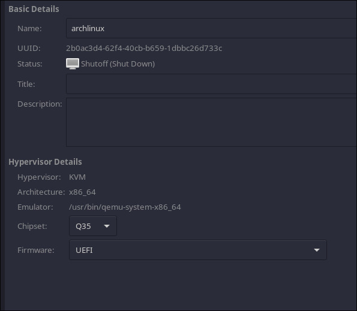
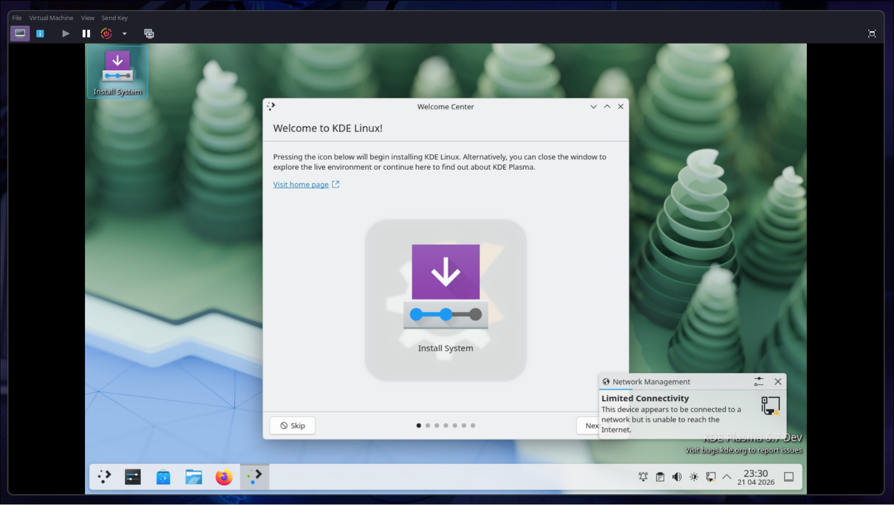

Diário de Bordo – João Guilherme
Sprint 0 - 13/04/2026 - 19/04/2026
Resumo da Sprint
Nesta sprint, o foco principal foi preparar o ambiente para rodar o KDE Linux utilizando o QEMU através de uma interface gráfica (virt-manager). Como estou rodando o host no Manjaro, o processo foi focado em virtualização nativa no Linux, facilitando o setup e o registro.
| Data | Atividade | Tipo (Código/Doc/Discussão/Outro) | Link/Referência | Status |
|---|---|---|---|---|
| 20/04 | Instalação do QEMU e virt-manager | Setup | - | Concluído |
| 20/04 | Download da imagem do KDE Linux | Setup | Link | Concluído |
| 20/04 | Criação da máquina virtual e configs (UEFI, hardware, disco) | Setup | - | Concluído |
| 21/04 | Criação do relatório de contribuição individual | Doc | - | Concluído |
Maiores Avanços
- Configuração bem-sucedida do ambiente de desenvolvimento local usando QEMU via interface gráfica.
Maiores Dificuldades
- Nenhuma dificuldade real. O único passo a mais foi precisar acessar a BIOS para habilitar a virtualização (VT-x) do meu processador i5-3570.
Aprendizados
- Compreensão do uso de interfaces gráficas (virt-manager) para gerenciamento do QEMU.
- Entendimento da necessidade de firmware UEFI para boot de imagens Linux modernas.
- Montagem direta de imagens de disco bruto (
.raw) como unidade de armazenamento principal da VM.
Passo a Passo feito para Subir o KDE Linux no QEMU via GUI
1. Instalação do QEMU e Interface Gráfica
Instalação dos pacotes necessários para virtualização no Manjaro:
sudo pacman -S qemu-desktop virt-manager libvirt edk2-ovmf dnsmasq iptables-nft
sudo systemctl enable --now libvirtd
2. Download da imagem
Download do arquivo .raw direto da documentação oficial do KDE:
https://kde.org/linux/docs/install-vm/
3. Criação da Máquina Virtual e Configuração do Disco
Importação da imagem .raw nativa no virt-manager através da opção "Import existing disk image", montando-a diretamente como o disco principal da VM. Durante a criação, marquei a opção "Personalizar configuração antes de instalar" e defini o sistema operacional base como Arch Linux.
4. Configuração de Hardware
Configurações de hardware para rodar o ambiente sem gargalos: * Memória: 8192 MB * Processadores: 4 cores
5. Configuração de Firmware
Alteração do firmware da máquina de BIOS Legacy para UEFI (provido pelo pacote edk2-ovmf). Passo obrigatório para que a imagem do KDE Linux consiga encontrar a partição EFI no disco .raw e iniciar corretamente.
6. Evidências da Execução

Configuração do Firmware UEFI nas propriedades da VM.

KDE Linux rodando com sucesso após o boot inicial.
Plano Pessoal para a Próxima Sprint
- [ ] Encontrar issue para contribuir no projeto